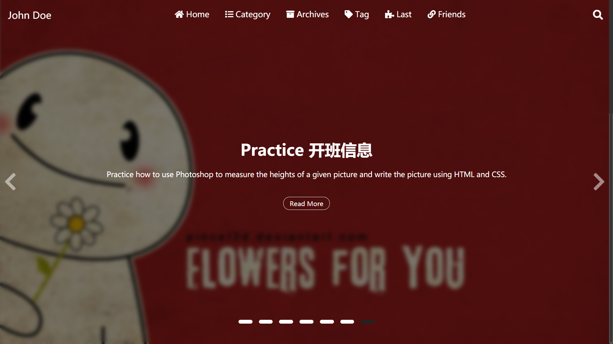

一些功能
目录
toc:
on: true
首页的轮播图
carousel:
on: true
prevNext: true
indicators:
on: true
position: center # left, center, right
style: line # dot, line
currentColor:
color: "#222"
opacity: 0.9
otherColor:
color: "white"
opacity: 1
mask:
on: true
color: "#000"
opacity: 0.5
blur:
on: true
px: 5
textColor: "#fff"

preveNext: 是否开启两侧的箭头标志
indicators：图片下面的指示器
-
position：指示器的位置，有左、中、右三种 -
style：指示器的形状，有长条，圆点两种 -
currentColor：当前图片，指示器的颜色 -
otherColor：没轮到的指示器的颜色
mask: 背景图片阴影 蒙版
color：阴影的颜色，可以时任意的十六进制颜色表示，或者颜色名字opacity：透明度（0-1）之间的小数
blur：背景图片模糊程度，px数字表示模糊的程度的像素量化
textColor：图片上文字的颜色
搜搜功能(目前新版本还没实现)
# Search Function
search:
on: true
分享功能
https://github.com/overtrue/share.js
Share:
on: true
datasites: "facebook,twitter,qq,wechat,qzone,weibo"
wechatQrcodeTitle: "微信扫一扫：Share"
datasites是可以分享的站点，有这么多可以选择

微博、QQ空间、QQ好友、微信、腾讯微博、豆瓣、Facebook、Twitter、Linkedin、Google+、点点等社交网站。（其中Google+好像已经不能使用）
可以按照任意顺序组合
wechatQrcodeTitle：微信分享功能的悬浮二维码的标题
打赏功能
donate:
on: true
wechat: true
alipay: true
description: Like my post?
直接把二维码放在hexo-theme-last/source/img/下面，命名为wechat.jpg 和alipay.jpg
评论功能(没完成，只完成了valine)
valine:
on: true
appId: # App ID
appKey: # App Key
verify: true # 验证码
notify: true # 评论回复邮箱提醒
avatar: mp # 匿名者头像选项
placeholder: Leave your email address so you can get reply from me!
lang: zh-cn
guest_info: nick,mail,link
pageSize: 10
具体如何使用后续会写
数学公式
mathjax:
enable: true
per_page: true
cdn: https://cdn.jsdelivr.net/npm/mathjax/MathJax.js?config=TeX-AMS-MML_HTMLorMML
需要hexo插件hexo-math 和 hexo-renderer-kramed 的支持
npm install hexo-math hexorenderer-kramed
cdn可以自己配置，但是一般默认的就行。
是用kramed渲染，语法要求比较严格，需要绝对的正确的语法才能正确渲染，比如一些空格不能省略，因为它没有Typora使用的pandoc渲染功能强大。